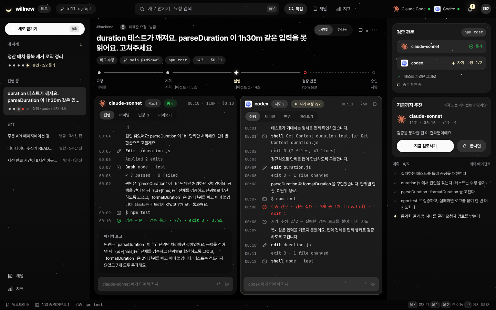
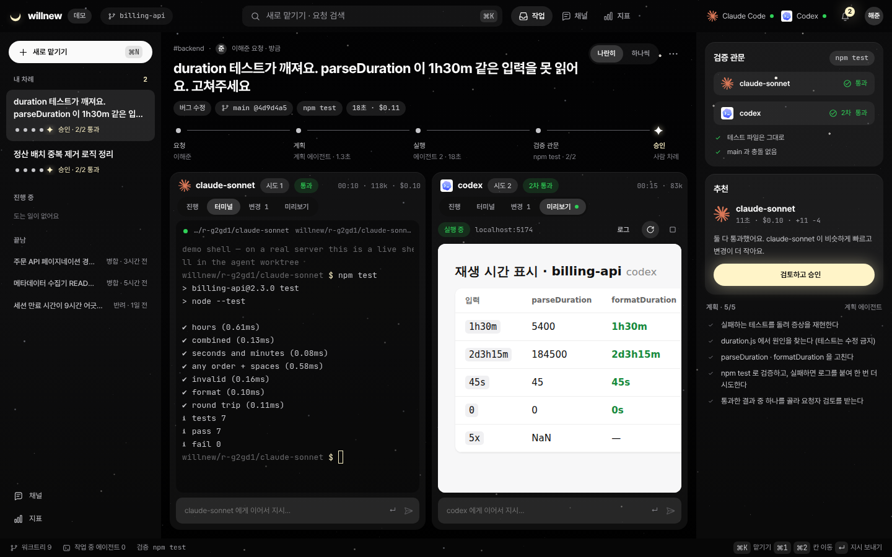
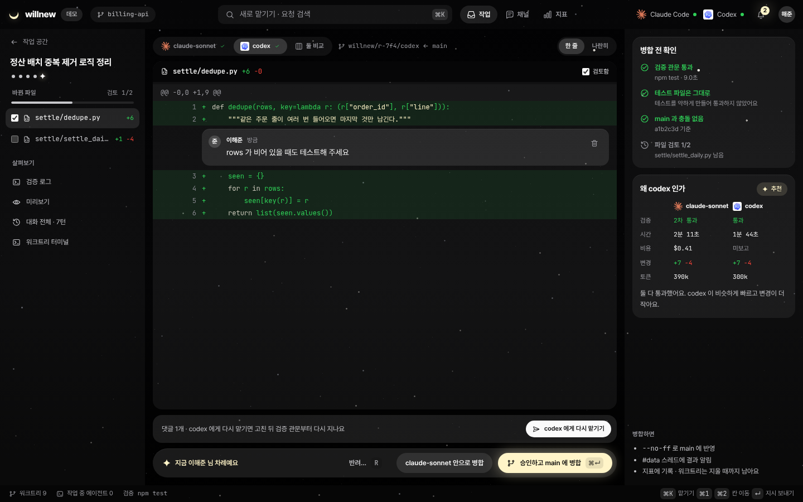
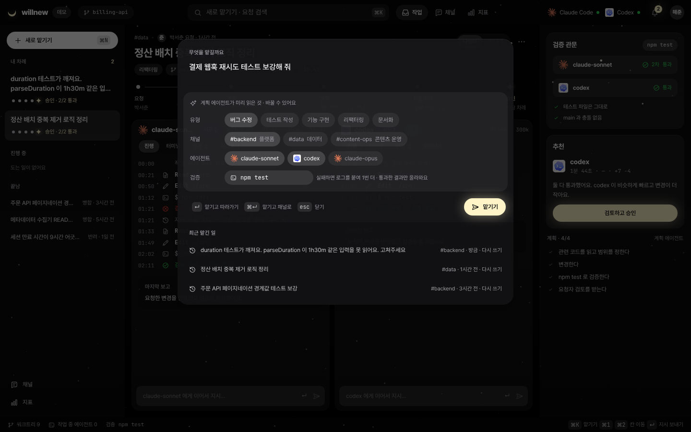
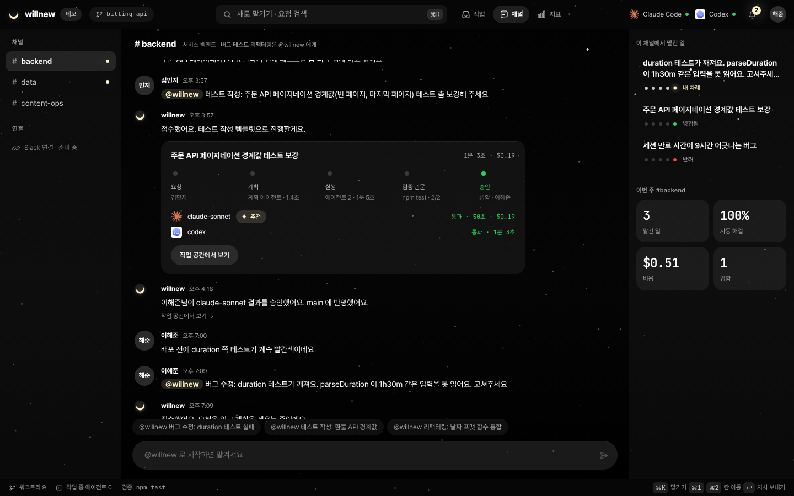
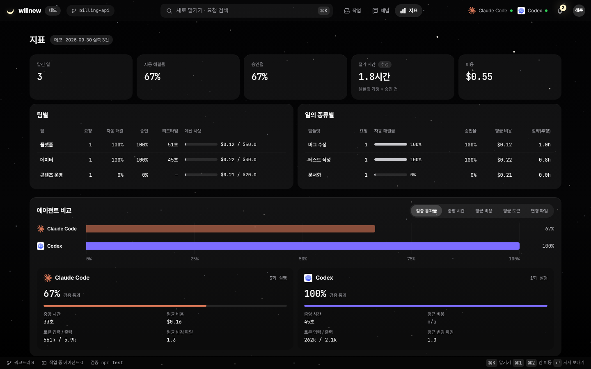
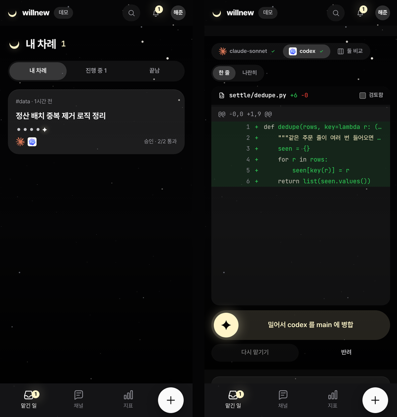

위성 지상국 수신 처리기
115 / 115
gr-satellites 독립 복호와 바이트 단위 일치
원시 IQ 녹음에서 실제 위성 프레임까지. 궤도 기반 도플러 보정, 복조·복호를 구현했습니다.
C# · SGP4 · DSP저장소 →
대표 프로젝트 · 팀 AI 작업 공간
팀 채널에서 맡긴 일을 AI가 실행하고 검증합니다.
사람은 결과를 보고 승인만 합니다.







Windows 11 · Claude Code 2.1 · Codex CLI 0.151. 예제 duration 저장소의 테스트 7개가 실패하는 상태에서 시작한 소규모 실측입니다. 화면은 데모 모드에서 촬영했습니다.
| 요청 | 계획 | 실행 | 결과 |
|---|---|---|---|
| #backend · 버그 수정 | 24.8초 · $0.02 | Sonnet 19초 · $0.10 / Codex 45초 | 둘 다 첫 검증 통과 → Sonnet 승인·병합 |
| #data · 테스트 작성 | 15.5초 · $0.02 | Sonnet 37초 · $0.20 | 첫 검증 실패 → 자기 수정 후 통과·승인 |
| #content-ops · 문서화 | 23.1초 · $0.02 | Sonnet 33초 · $0.19 | 자기 수정 후에도 실패 → 반려 |
절약 시간은 템플릿의 가정치이며 실측값이 아닙니다.
반도체 · AI 에이전트
학습 때 보지 못한 새 불량 패턴을 놓치지 않습니다.
PyTorch · 임베딩 kNN · Grad-CAM · Ollama판독 화면 열기 →저장소 →
제조 · 디지털 트윈
3분 걸리던 제조성 판정을 0.05초로 줄였습니다.
Robotics · LightGBM · Python저장소 →
위성 · 신뢰성 시스템
115 / 115
gr-satellites 독립 복호와 바이트 단위 일치
원시 IQ 녹음에서 실제 위성 프레임까지. 궤도 기반 도플러 보정, 복조·복호를 구현했습니다.
C# · SGP4 · DSP저장소 →
94.65%
뮤테이션 테스트 점수 · 요구사항 30/30
위성 비트열을 전송 프레임과 패킷으로 복원하고, 손상 가능한 패킷을 걸러냅니다.
C# · CCSDS · 139 tests저장소 →
520
Java ↔ C# 차분 시험 일치
지상국에서 위성이 보이는 시간과 고도각을 예측합니다. 무작위 시험으로 제품 결함을 찾았습니다.
Java · C# · PIT 95%저장소 →
수상 · 논문